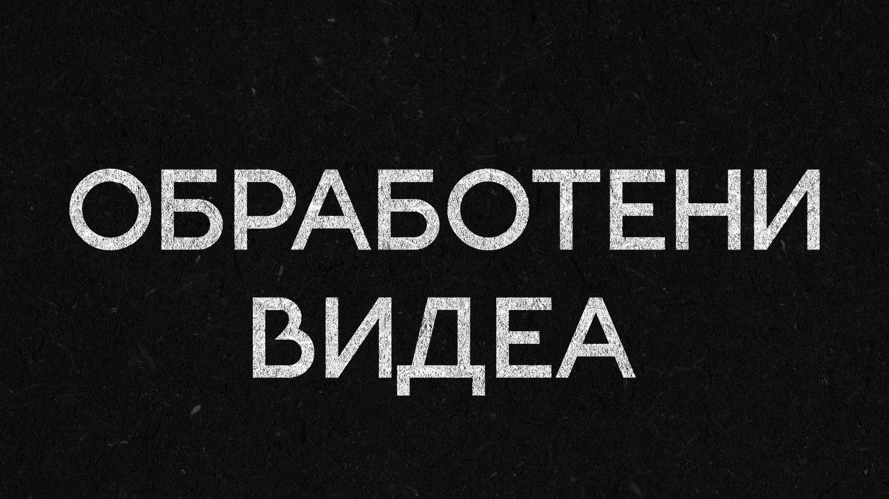
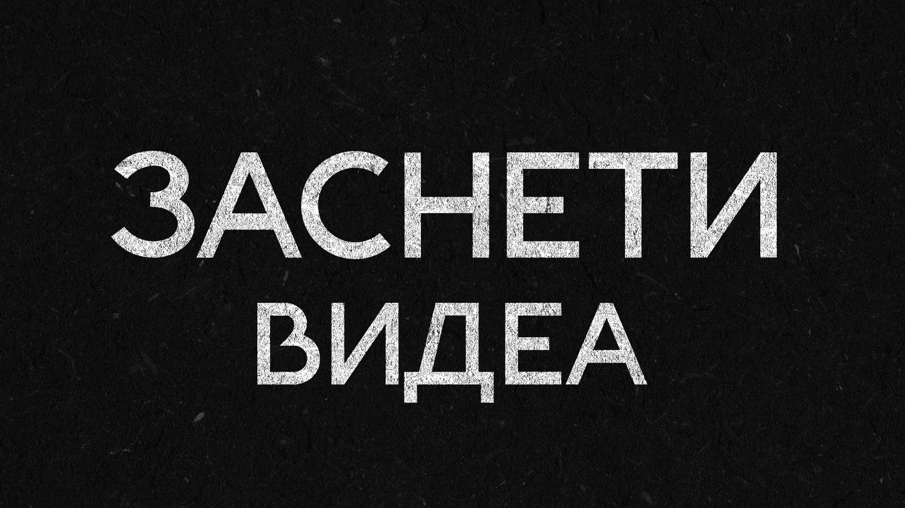
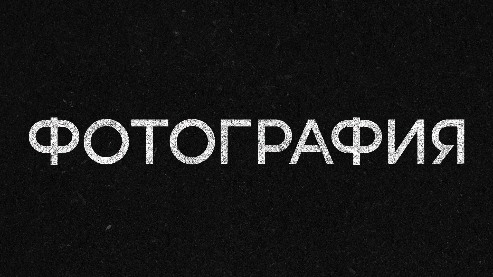
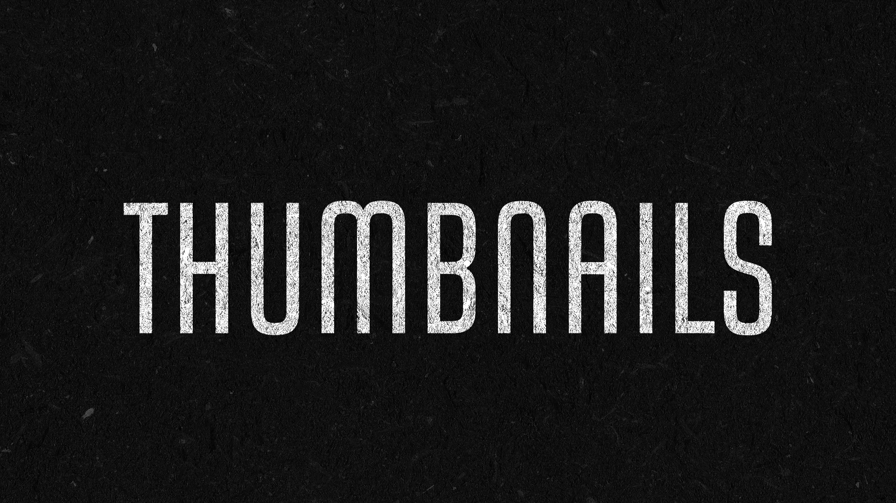

Фотография
Виж проектите
Видео Монтаж
Гледай видеата
Тъмбнейли
Разгледай дизайнитеНай-разглеждани
-

-
<<<<<<< HEAD

=======
>>>>>>> f897cc3d37635c56d5de66af6fe9e47466e58bdf -

Мнения от клиенти

"Много съм доволна от помощта с тъмбнейлите за YouTube! Бяха направени точно както исках, бързо и с внимание към детайла. Резултатът наистина подобри визията на видеата ми. Благодаря много за съдействието!"
- Тея.jpg)
"Много съм доволен от целият процес. Обработва, прави подходящи тъмбнейли, мотивира ме за още видеа, което за мен е най-важното качество. Отнася се с внимание към детайлите. Препоръчвам го на всеки! Благодарен съм, че работим заедно!"
- Захи, Царството на наргилетата.jpg)
"Работата с него е удоволствие. Не просто изпълнява, а мисли, предлага идеи и подобрява проекта. Няма нужда да му се напомня, той следи сроковете и дърпа процеса напред. Винаги реагира навреме, комуникацията е ясна и директна. Истински партньор!"
- Vladislav Chanev